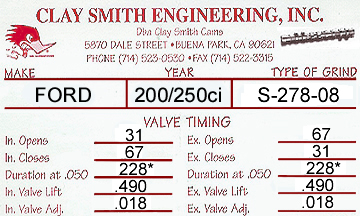

Tech Home - Cam Cards
You should always "Degree your Camshaft". We suggest using the Intake Centerline Method, as it is easier for most beginners. Below is a brief description of the Centerline Method, however we recommend reading our tech article "How to Degree your Camshaft" for a complete explanation.
To install this cam straight up, use a 108 Centerline For street use, or 4 degrees advance, use a 104 Centerline. (see the notes below for more information) |
| CENTERLINE METHOD |
Note: You always want to hit your points by spinning the crank in the same direction it will rotate when the engine is running, which removes any variances created by slack in the timing chain. If your rings provide a lot of friction, it can be easy to go too far. If so, back up and try again. Just do not set the dial to 0.050 by turning the crank counterclockwise.
Continue by slowly rotating the engine clockwise until the dial indicator reads 0.050 inch before maximum lift (or zero) and record the number on the degree wheel. Next, continue to rotate the crankshaft clockwise through maximum lift (past zero) and onward until the dial indicator reads 0.050 inch after maximum lift (this is the closing side of the intake lobe), and again record the number on the degree wheel. Next, add those two numbers together and divide by two. The resulting number will be the location of maximum lift in relation to the crankshaft, which is known as the camshafts intake centerline. This number should be the same as the camshafts lobe center if the cam was ground straight up. If the numbers match, the cam is installed properly. If not, adjust the cam accordingly, either by advancing or retarding the camshaft.
Note: Many manufacturers, such as Comp Cams, grind their camshafts with 4 degrees of advance automatically added in. Clay Smith however, grinds their cams straight up, without any advance added in. If you prefer more bottom end power, we recommend installing your Clay Smith cam with 4 degrees of advance. In other words, if the cams lobe center is 110 degrees, you would install the cam with a centerline of 106 degrees. Or if the cams lobe center is 112 degrees, you would install the cam with a centerline of 108 degrees.
However, when you install a cam with advanced valve timing, you almost always lose a little top end power. If you do a lot of highway driving, and more top end power is desired rather than bottom end torque, you may choose to install the cam straight up. You can also make a compromise and install it with 2 degrees of advance. While the choice is totally up to you, Classic Inlines recommends installing the cam with 4 degrees of advance for most street or street/strip applications.